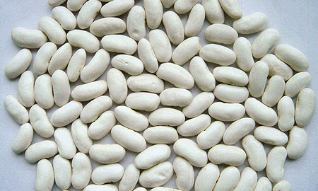
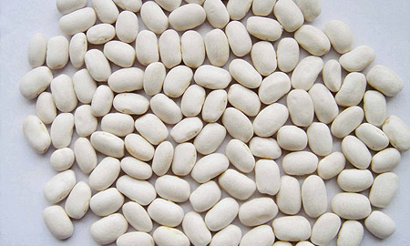

Export · Specialty Commodity
White Kidney Beans
Premium white kidney beans available in three size grades — 180–200, 200–220, and 220–240 pieces per 100 grams. Carefully sorted and packed to international export standards.

Product Range
Available Sizes
Size: 180–200
180–200 pieces per 100 grams
- Count180–200 Pcs / 100g
- Moisture14–16.5% Max
- Admixture1% Max
- Imperfect Grains3% Max

Size: 200–220
200–220 pieces per 100 grams
- Count200–220 Pcs / 100g
- Moisture14–16.5% Max
- Admixture1% Max
- Imperfect Grains3% Max

Size: 220–240
220–240 pieces per 100 grams
- Count220–240 Pcs / 100g
- Moisture14–16.5% Max
- Admixture1% Max
- Imperfect Grains3% Max
Origin
Madagascar
Enquire About White Kidney Beans
Specify your required size grade, quantity, and destination port.